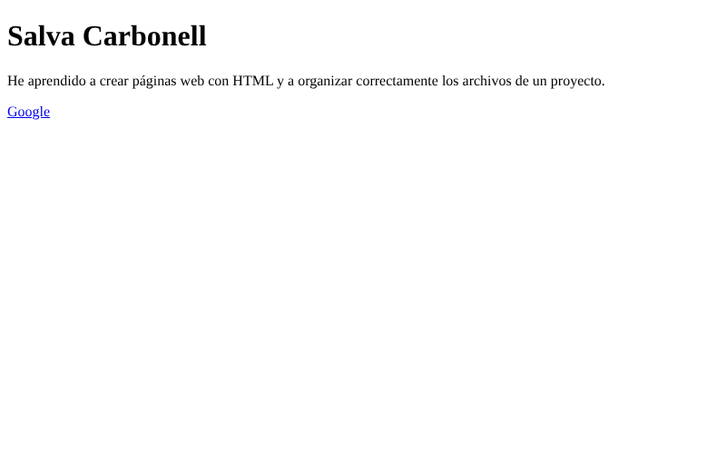
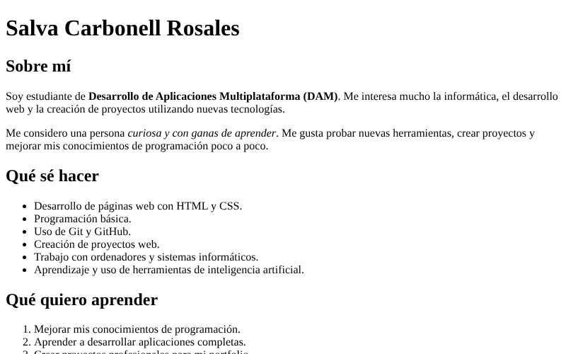
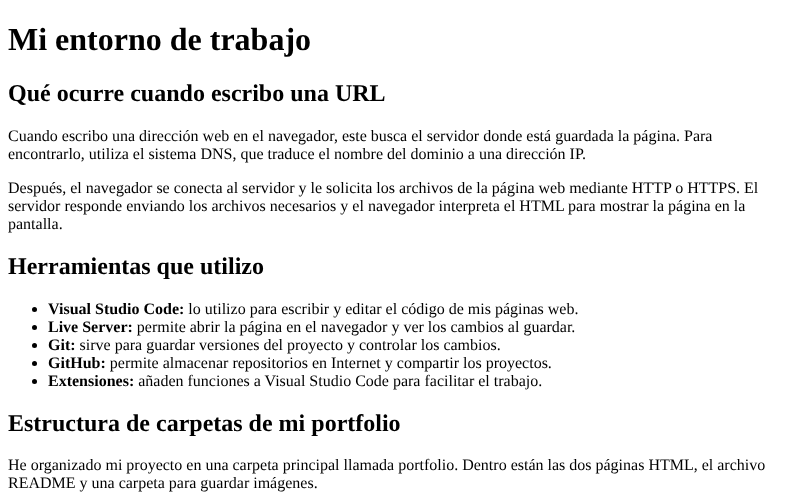
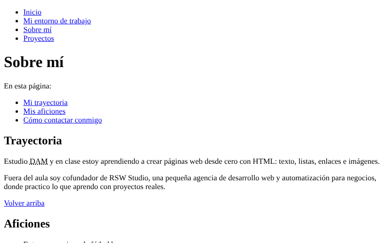

Estas son cuatro de las páginas que he hecho en el curso de Lenguajes de
Marcas, con una captura de cada una y lo que aprendí al hacerla.
Práctica 1 · Mi primera página

Aprendí la estructura mínima de un documento HTML (cabecera y cuerpo), a poner un título, un párrafo y un enlace, y a organizar los archivos de un proyecto en carpetas.
Actividad 4 · Ficha personal

Aprendí a estructurar un texto con encabezados, párrafos, listas ordenadas y no ordenadas, y a destacar palabras con negrita y cursiva.
Actividad 5 · Mi entorno de trabajo

Aprendí cómo llega una página desde el servidor hasta mi navegador (DNS y HTTP/HTTPS), para qué sirve cada herramienta que uso y cómo organizar las carpetas de mi portfolio.
Actividad 6 · Sobre mí y menú de navegación

Aprendí a conectar varias páginas con un menú, a enlazar secciones concretas con anclas, y a usar enlaces externos seguros, de correo y de descarga.